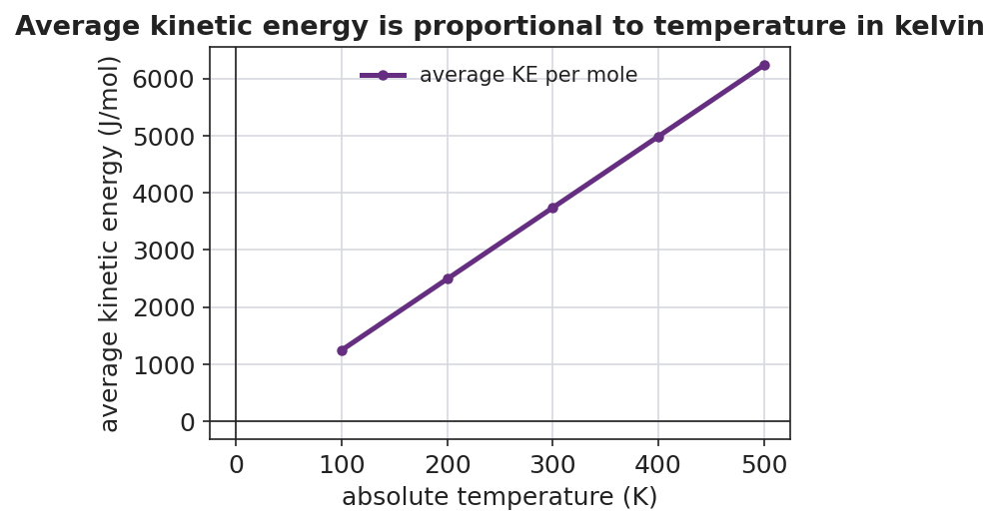

01 Phenomenon
A sealed bag of chips is packed at a factory near the beach. Someone drives it up a tall mountain. At the top, the bag has puffed up tight — ready to burst — even though nobody opened it and nobody added any chips or any air. The bag is still sealed. Yet its size changed. When the bag comes back down to the beach, it deflates to its original size.
02 Driving question
What is a gas actually made of, and what causes the pressure that pushes a bag of chips outward?
03 Notice & wonder
| I notice… | I wonder… |
|---|---|
Turn & Talk #1: Look at the particle figure your teacher is projecting. Every box has the same number of particles, but the arrows get longer from left to right. In one sentence, what do you think the longer arrows represent — and what would you have to do to a gas to make its particles move faster?
04 Initial model
Before your teacher names anything, draw what you think the air inside the sealed chip bag looks like, zoomed in to the particle scale.
In the box below: draw the bag wall on one side, draw the gas particles, and use arrows to show what the particles are doing.
+-------------------------------------------+
| |
| |
| |
| |
| |
| |
+-------------------------------------------+Are your particles packed tightly together, or far apart with space between them? _______________
Write one sentence: what happens at the bag wall every time a particle reaches it?
05 Investigate
Part 1 — ABCs: Marshmallow in a syringe (predict, then test)
A single marshmallow is sealed inside a capped syringe. The air pockets trapped inside the marshmallow are gas.
Predict first (before you pull the plunger): If you pull the plunger back — making more room but adding no air — what will happen to the marshmallow?
My prediction: _______________________________________________
Now test it. Pull the plunger back, then push it in. Record what you observe:
| Action | What happens to the marshmallow? |
|---|---|
| Pull the plunger back (more space) | |
| Push the plunger in (less space) |
Did you add or remove any air from the marshmallow during this? _______________
Part 2 — Particle simulation: the temperature link
Watch the KMT particle simulation. Your teacher will start it cold, then raise the temperature. Record what you see.
| When the temperature is raised… | What you observe |
|---|---|
| How fast do the particles move? | |
| How often do they hit the walls? | |
| Harder or softer collisions? |
Part 3 — Reading the temperature–energy graph
Look at figures/temperature_vs_kinetic_energy.png:

- The line passes through the point (0, 0). In plain words, what does that mean about a gas at 0 K?
- As the kelvin temperature goes up, what happens to the average kinetic energy?
- The line is straight and goes through the origin. If you doubled the kelvin temperature, what would happen to the average kinetic energy?
06 Make it make sense
For each situation, use the kinetic molecular theory to explain what is happening at the particle level.
On a mountain, the sealed chip bag puffs up — even though no air was added and the bag never got hotter.
- What changed outside the bag at high altitude? _______________________________________________
- What are the gas particles inside the bag still doing? _______________________________________________
- Why does the bag puff up? _______________________________________________
A bicycle tire feels much harder after a long, fast ride on a hot day. No air was added to the tire.
- What happened to the temperature of the air inside the tire? _______________________________________________
- What happened to the speed of the air particles? _______________________________________________
- Why does the tire feel harder (higher pressure)? _______________________________________________
A balloon is placed inside a vacuum chamber and the air around it is pumped out. The balloon swells.
- What is happening to the particles outside the balloon as the pump runs? _______________________________________________
- What are the particles inside the balloon still doing? _______________________________________________
- Why does the balloon swell? _______________________________________________
07 Key vocabulary
- kinetic molecular theory
- a model of matter that pictures a gas as a large number of tiny particles in constant, random motion, far apart compared to their size, colliding elastically with the walls and with each other; it explains the bulk properties of a gas (pressure, temperature) in terms of particle motion
- temperature
- a measure of the average kinetic energy of the particles in a sample; measured on the kelvin scale, where 0 K (absolute zero) is the point at which particle motion stops; doubling the kelvin temperature doubles the average kinetic energy
- pressure
- the force exerted by gas-particle collisions on the walls of a container, per unit of area; pressure increases when particles collide with the walls more often or with more energy (e.g., when the gas is heated or compressed)
Use each term in a sentence about today’s phenomenon or investigation. Do not copy the definition — describe something you actually observed or did.
kinetic molecular theory: _______________________________________________ _______________________________________________
temperature: _______________________________________________ _______________________________________________
pressure: _______________________________________________ _______________________________________________
08 Revise your model
Return to your Initial Model drawing of the gas inside the chip bag. Add these labels:
Label the motion arrows with the words kinetic energy.
Point to one particle hitting the wall and label it: *“this collision contributes to ___.”* (Fill in the blank.)
Write a revised appositive sentence that defines the model:
The kinetic molecular theory — ___________________________________________ — explains pressure as _______________________________________________.
Then finish this Because / But / So sentence:
On the mountain, the sealed bag of chips puffs up even though no air was added and it never got hotter because __________________________________________, but __________________________________________, so __________________________________________.
09 Exit ticket
(a) In one or two sentences, explain what the temperature of a gas measures at the particle level. Why must we use the kelvin scale?
(b) In one or two sentences, explain what causes the pressure of a gas inside a closed container.
(c) A capped syringe full of air is pushed inward, squeezing the trapped air into half the space — without changing its temperature. Using the kinetic molecular theory, explain what happens to the pressure inside the syringe and why.
10 Explore further
- Marshmallow in a syringe: Seal a single mini-marshmallow inside a large plastic syringe (tip capped or held). Pull the plunger back: the marshmallow expands as the gas pressure around it drops. Push the plunger in: the marshmallow shrinks. The trapped air pockets in the marshmallow are gas; reducing the outside push lets the inside push expand them. Connect directly to the chip-bag phenomenon.
- Balloon in a vacuum chamber: Place a partially inflated balloon (or a marshmallow) under a bell jar and pump air out. As the outside particles are removed, the balloon swells — the inside particles keep colliding with the balloon wall while the outside push disappears. Re-admit air and it shrinks back. This is the clearest demonstration that pressure is a *balance of collisions*, not a fixed property.
- KMT particle-motion simulation (Javalab / PhET "Gas Properties" or "States of Matter"): Students watch particles move in a box, speed them up by raising the temperature slider, and observe the collision rate against the walls increase. No external URL is required if the lab uses the school's Javalab install; the figure `figures/kmt_particle_motion.png` provides an offline equivalent.